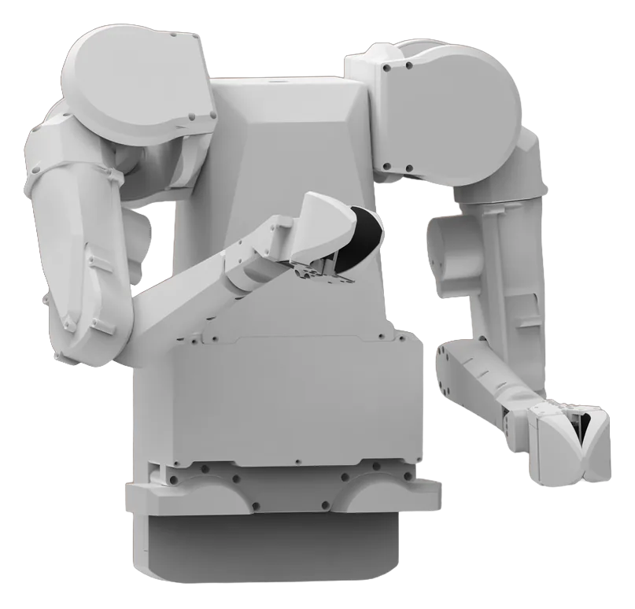
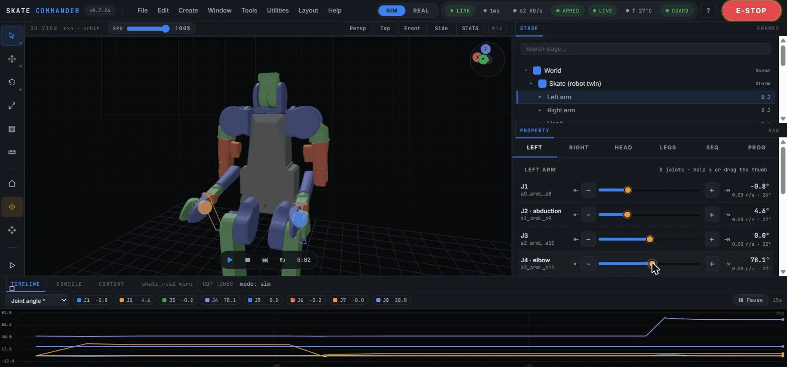
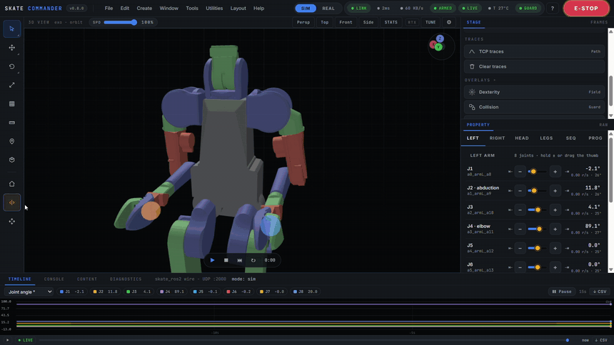
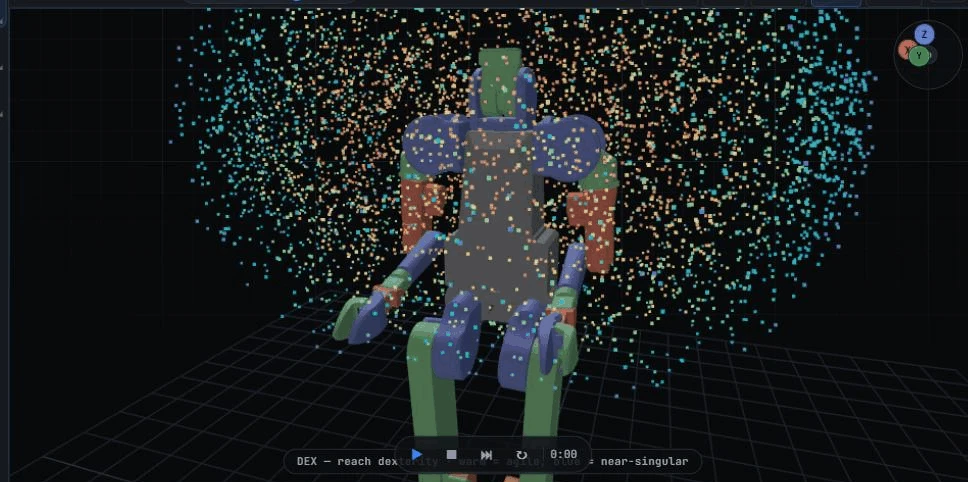
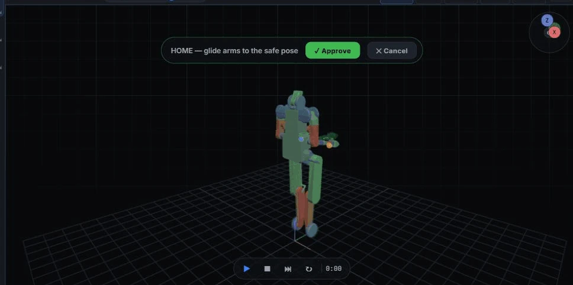
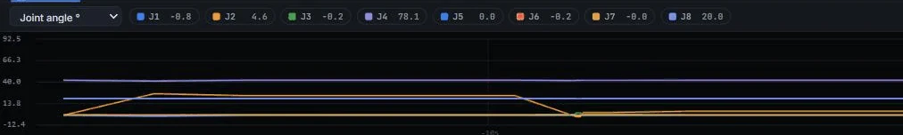

Drive a two-armed robot from your browser — a 3D simulation today, built to switch to the real R.Botic Skate when the hardware arrives.
An open two-handed work-cell & browser cockpit — no robot required to try it. Everything here runs in simulation today (sim-validated, no hardware hours yet); the real Skate is en route, and the SIM/REAL switch is already wired in software.

Skate hardware · image © R.BoticDrive the 3D digital twin from a browser; the same commands are built to drive the real robot through one SIM/REAL switch, once the hardware arrives. Early access — sim-first today.


A full teleoperation workstation in one browser cockpit — a workstation-style shell over a safe, wire-honest control core; every motion is checked for self-collision before it reaches the robot.



A menu bar, a left tool rail, a center 3D view, a right STAGE (scene tree) over PROPERTY (inspector), and a TIMELINE / CONSOLE / CONTENT browser — flat, token-driven dark theme.
Built from the official URDF in Three.js; forward kinematics cross-checked against MuJoCo link positions.
Sliders, hold-to-jog, jump-to-limit, and world X/Y/Z TCP steps (1–50 mm).
Grab a wrist in 3D; damped-least-squares IK glides all 7 arm joints — with snap (10 mm / 15°) and an on-drag coordinate HUD.
One input drives both arms; CARRY holds one object with both wrists and moves them together.
Home and waypoint glides route around a self-collision (RRT) the straight joint path can't pass.
A torque spike while barely moving latches a soft-stop — pushing into an obstacle, not a fast commanded move.
Trapezoidal ease-in/out, plus a teach-pendant SPD slider scaling all motion server-side.
Spawn reachable markers (go-to · →program · ⇄ bimanual reach) and keep-out boxes the RRT planner routes around; a ghost robot + route preview gates every Home / waypoint move.
Work-camera point cloud, multi-object smart-pick grasp synthesis and image-based visual servoing — sim-validated, re-enabling with a real depth camera.
A DEX dexterity cloud over the workspace; a SING chip warns at near-singular poses.
Risky moves draw a translucent ghost at the target pose behind an Approve / Cancel gate.
Foxglove-style telemetry strip charts, an RViz-style live TF frame tree with 3D axis triads, and a robot_monitor-style diagnostics tree with per-joint status.
Collision-mesh and TCP-force overlays, trajectory replay + CSV export, sim transport (play / step / reset), a measure tool, a stats HUD, and Stage search + selection outline.
The sandboxed rbt Python API with Click-to-Step, teach-in recording, and a waypoint sequencer.
Collision guard (incl. arm-vs-arm) along the path, a software E-STOP + deadman, and keyboard / screen-reader access.
Sim-first, wire-honest: one protocol carries both the MuJoCo twin and the real robot.
Control-ready MuJoCo model + capsule collision layer; kinematics validated against MuJoCo link positions.
One UDP protocol (SkateLink) for both the MuJoCo sim endpoint and the real robot, with a software E-STOP / deadman watchdog.
An Isaac-Sim-style browser cockpit (FastAPI + WebSocket, Three.js twin): server-side IK + collision guard, RRT routing, planning previews, live telemetry plots, a TF tree and a full inspection toolset.
Phase 1: a GRAFCET-sequenced two-handed assembly cycle with camera quality inspection and a SCADA dashboard.
No install — drive the twin's joints (jog, sliders, Home) right in your browser; the full cockpit, the wire and the work-cell are all open.